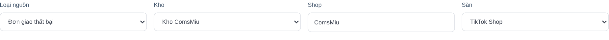
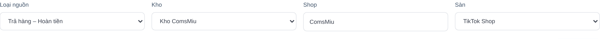
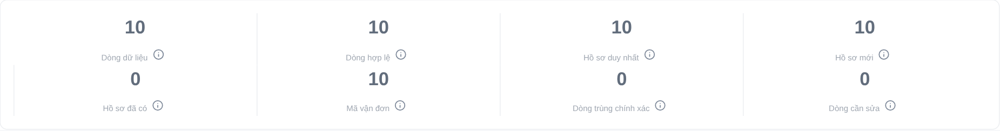
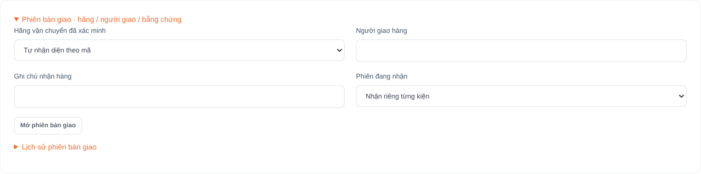
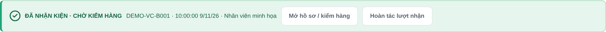
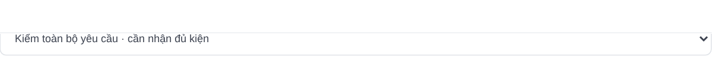
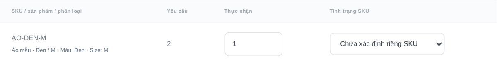
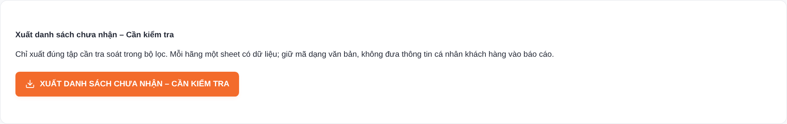

Từ hai file nguồn
đến hàng thực nhận
QUẢN LÝ & ĐỐI SOÁT HÀNG HOÀN V2
Biết đơn nào phải về kho.
Ghi nhận đúng kiện đã về.
Kiểm đủ hàng và xử lý phần còn thiếu.
Dành cho quản lý kho, nhân viên nhận hoàn và nhân viên đối soát.
Áp dụng bản có âm báo tít hoàn • 09/11/2026.
01 / File giao không thành công
Vào Đơn giao thất bại.
02 / File trả hàng hoàn tiền
Vào Trả hàng – Hoàn tiền.
Ghép đúng mã · đúng kho · đúng phạm vi shop
Một quy trình, ba mốc kiểm soát
Hai nguồn có logic riêng, cùng dùng dữ liệu nhận hàng thực tế tại kho.
1. Nhập đúng nguồn
Đúng loại file, kho, shop và sàn.
2. Chốt danh sách cần nhận
Loại trường hợp không có nghĩa vụ trả hàng.
3. Nhận kiện thực tế
Có hàng trước mặt, chọn ca rồi tít mã.
4. Ghép và kiểm SKU
Khớp đúng hồ sơ, đếm lượng và xem tình trạng.
5. Tra soát phần chưa về
Phân công, liên hệ hãng và đặt mốc theo dõi.
6. Hoàn tất có bằng chứng
Kiểm đủ/nguyên vẹn hoặc xử lý ngoại lệ rõ ràng.
File A: hàng giao không thành công
Đường vào: Quản lý & Đối soát hàng hoàn → Đơn giao thất bại → Nhập dữ liệu.
Chọn Loại nguồn
Đơn giao thất bại. Giữ nguyên mã đơn và mã vận đơn dạng văn bản.
Chọn đúng kho / shop / sàn
Dùng cùng thông tin này ở các lần cập nhật sau và khi tít nhận.
Chọn CSV UTF-8 hoặc XLSX gốc
Bấm Đọc và đối chiếu tệp, chưa coi là đã lưu.
Cần theo dõi hoàn
Có bằng chứng đã bàn giao cho vận chuyển và hàng giao thất bại/đang quay đầu.
Không suy từ một chữ “Đã hủy”
Hủy trước bàn giao rõ ràng: không cần nhận hoàn.
Thiếu bằng chứng: để xác minh. “Sẵn sàng giao” chưa phải đã bàn giao.

File B: trả hàng – hoàn tiền
Đường vào: Quản lý & Đối soát hàng hoàn → Trả hàng – Hoàn tiền → Nhập dữ liệu.
Chọn Loại nguồn
Trả hàng – Hoàn tiền. Kiểm tra mã yêu cầu, mã đơn gốc, vận đơn hoàn và SKU.
Chọn đúng kho / shop / sàn
Nhập riêng với file A. Một đơn mua có thể có nhiều yêu cầu trả hàng.
Đọc rồi xem trước
Theo số lượng cần trả của từng yêu cầu/SKU, không mặc định là toàn bộ đơn mua.
Trả hàng và hoàn tiền
Theo dõi hàng vật lý và số lượng trả. Hoàn một phần chỉ cần đúng phần được yêu cầu.
Chỉ hoàn tiền
Nếu không yêu cầu khách trả hàng, quản lý riêng; không cộng thành hàng kho đang thiếu.

Xem trước xong mới xác nhận nhập
Làm lần lượt với từng file. Màn hình xem trước chưa phải xác nhận đã nhập nghiệp vụ.

Kiểm số & mã
Bấm chữ i để hiểu cách đếm. Nhiều dòng SKU không làm tăng số hồ sơ. Mã dài phải còn nguyên.
Xử lý cảnh báo
Sai tên cột: dùng Ánh xạ cột. Hết dòng lỗi/mâu thuẫn mới lưu. Thiếu vận đơn vẫn có thể giữ hồ sơ chờ bổ sung.
Xác nhận & chờ phản hồi
Bấm Xác nhận nhập vào hệ thống. Chờ thông báo Đã có xác nhận lưu trên máy chủ.
Sau hai file: quản lý theo nhóm việc
Ví dụ minh họa: file A có 10 hồ sơ, file B có 6. Đã xác minh 4 hồ sơ không cần nhận hàng.
7 đã nhận → kiểm hàng
Chưa có nghĩa 7 hồ sơ đều đủ SKU và nguyên vẹn. Mở các hồ sơ chờ kiểm.
2 cần kiểm tra → phân công
Bấm số để mở danh sách, lọc theo hãng, giao người xử lý và đặt ngày dự kiến.
3 trung chuyển → theo dõi
Theo mốc dự kiến và thông tin vận chuyển. Chưa tự kết luận mất hàng.
Ví dụ không phải số liệu shop. KPI có thể giao nhau; biểu đồ nhóm chính loại trừ nhau. Khi tra soát, để phạm vi ngày bao phủ các đơn cũ còn mở.
Khi hãng giao về: nhận theo ca & phiên
Chỉ tít nhận khi kiện thực tế đã được giao về kho. Đây là bước lưu bằng chứng nhận.
Chọn kho và ca đang hoạt động
Nhân viên phải được phân công. Quản lý có thể dùng Mở ca nhận cho tôi.
Mở phiên theo đợt bàn giao
Chọn hãng đã xác minh, người giao, ghi chú và Mở phiên bàn giao. Kiểm đếm số kiện thực tế khi kết thúc.
Tít từng kiện, chờ xác nhận
Dùng HID + Enter/Tab, nhập tay hoặc camera. Đưa kiện đã nhận sang khu Chờ kiểm.


Nghe âm báo, đọc đúng trạng thái
Nguồn có thể nhập trước hoặc sau lúc nhận; bằng chứng nhận trước phải được giữ lại.
Hai tít cao
Đã nhận kiện theo xác nhận máy chủ.
Tiếp tục kiểm SKU và tình trạng.
Ba tít ngắn
Mã đã được nhận trước đó.
Xem người/giờ lần đầu, không cộng thêm kiện.
Hai âm trầm
Mã chưa khớp, khớp nhiều hồ sơ hoặc yêu cầu lỗi.
Đọc thông báo để chọn cách xử lý.
Đã lưu nhận thực tế · chờ đối chiếu nguồn
Giữ kiện, giữ mã. Sau xác nhận file, hệ thống tự ghép khi đúng mã/kho/phạm vi. Mã nhiều ứng viên: quản lý vào Đối soát → Sổ nhận → Ghép dữ liệu, có lý do.
Lỗi mạng / chưa có xác nhận
Giữ mã rồi thử lại cùng thao tác hoặc kiểm lịch sử. Không nghe âm thành công chưa đủ để kết luận máy chủ chưa từng nhận yêu cầu.
Nhận kiện xong phải kiểm từng SKU
Ví dụ: nguồn yêu cầu 2 áo, kho đếm được 1. Đây là nhận thiếu dù đã tít kiện thành công.
Chọn Phạm vi kiểm hàng
Kiểm riêng kiện đã về khi còn nhiều kiện. Kiểm toàn bộ yêu cầu khi đã nhận đủ kiện.
Đếm thực tế, chọn tình trạng
Nhập từng SKU/màu/size. SKU không có trong kiện ghi 0. Phân biệt đủ số lượng với nguyên vẹn.
Ghi vị trí, lý do và lưu
Ghi chú/lý do tối thiểu 8 ký tự, bổ sung ảnh/video nếu cần → Lưu kiểm nhận sản phẩm.


Đơn chưa về: chuyển thành việc có người làm
Mục tiêu là một danh sách tra soát có người phụ trách và mốc hẹn, không chỉ một con số đỏ.
Mở đúng tập cần xử lý
Bấm KPI hoặc vào Đơn chưa nhận – Cần kiểm tra. Lọc kho, hãng và nghiệp vụ; giữ cả đơn cũ còn mở.
Phân công và đặt mốc
Chọn hồ sơ → phân công người xử lý; trong chi tiết ghi Ngày dự kiến hàng về, lý do và cập nhật xử lý.
Theo dõi đến khi có bằng chứng
Nhận được kiện → tít và kiểm. Chưa có hàng → giữ theo dõi, tra soát hoặc tạo khiếu nại.
Đang trung chuyển
Theo dõi hành trình và ngày dự kiến. Quá hạn là tín hiệu xác minh, không tự gán đã mất.
Chưa có mã / chưa rõ hãng
Bổ sung từ nguồn xác thực. Không đoán mã, hãng hoặc chọn đại hồ sơ khi mã khớp nhiều yêu cầu.
Hãng báo “đã giao về kho”
Đối chiếu người nhận, giờ và bằng chứng. Chỉ đánh dấu nhận khi có hàng/bằng chứng kho phù hợp.
Gửi đối soát cho từng hãng vận chuyển
Xuất tập Chưa nhận – Cần kiểm tra theo bộ lọc, mỗi hãng một sheet.

1. Lọc rồi xuất
Chọn đúng hãng, kho và khoảng ngày. Mã đơn/vận đơn/SKU được giữ dạng text đầy đủ.
2. Hãng phản hồi cột vàng
Cột 14–18: người giao, ngày bàn giao, tình trạng tra soát, kết quả xác minh và ghi chú.
3. Cập nhật lại hồ sơ
Nhân viên đối soát đọc phản hồi rồi ghi kết quả xác minh, ngày hẹn và bằng chứng trong app. Không mặc định tự nhập lại file hãng.
Hàng thiếu, sai, hỏng: lập hồ sơ có chứng cứ
Mở hồ sơ → ghi kết quả kiểm → Tạo hồ sơ khiếu nại. Nhân viên bổ sung chứng cứ; quản lý lập và theo dõi hồ sơ.
Giữ hiện trạng và chứng cứ
Chụp tem, kiện, nội dung thiếu/sai/hỏng; lưu ảnh, video hoặc biên bản. Gắn đúng hồ sơ hoặc kiện.
Lập hồ sơ trách nhiệm
Chọn loại khiếu nại, bên chịu trách nhiệm, hãng, người phụ trách, hạn phản hồi và số tiền yêu cầu.
Theo dõi phản hồi và thực nhận
Cập nhật trạng thái, kết quả, số tiền được duyệt. Có tiền về mới ghi số thực nhận và ngày thực nhận.
YÊU CẦU
200.000 ₫
Đang đề nghị bồi thường.
ĐƯỢC DUYỆT
150.000 ₫
Chưa có nghĩa tiền đã về.
THỰC NHẬN
0 ₫
Tiếp tục theo dõi thanh toán.
Số tiền minh họa. Tiền hoàn cho khách và tiền bồi thường kho là hai luồng riêng.
Cập nhật nguồn mới, giữ bằng chứng cũ
Theo dõi nhiều ngày bằng nguồn mới nhất; không coi mỗi lần tải lại là một lô hàng mới.
Nhập bản xuất mới từ sàn
Giữ đúng loại nguồn/kho/shop/sàn. Xem thay đổi trước → sau; file cũ hơn bị chặn khi có mốc cập nhật.
Đọc cảnh báo cần kiểm lại
Nguồn đổi SKU hoặc lượng sau kiểm: giữ kết quả cũ nhưng cần kiểm lại trước khi hoàn tất.
Sửa đợt nhập sai có lịch sử
Admin vào Lịch sử nhập dữ liệu → Loại bỏ, ghi lý do; có thể Khôi phục.
Nhập lại đúng file
Không tạo thêm hồ sơ chỉ vì tải lại. Mất mạng: chọn lại cùng file và thông tin để tiếp tục.
Nhập danh sách kho / SaleWork
Đối soát hàng hoàn → Nhập dữ liệu → chọn Danh sách kho / SaleWork. Đây là bằng chứng kho, khác nguồn yêu cầu từ sàn.
Giữ nhận, kiểm và khiếu nại
Loại bỏ mềm không được dùng để xóa dấu vết. Nguồn kho đã có xử lý tiếp có thể cần quản lý xác minh trước khi gỡ.
Cuối ca: kiểm sáu việc, không để hồ sơ trôi
Quản lý nhập/đối soát/phân công/báo cáo • Nhân viên nhận & kiểm hồ sơ được phép • Admin xử lý nguồn sai.
01 / Chốt nhận thực tế
Đối chiếu kiện ngoài kho với phiên bàn giao; kiểm mã trùng, người/giờ và bằng chứng.
02 / Giải quyết mã chưa ghép
Mở Sổ nhận. Bổ sung nguồn hoặc giao quản lý xác minh mã nhiều ứng viên.
03 / Xử lý hàng chờ kiểm
Kiểm SKU, số lượng và tình trạng; tách hàng thiếu/sai/hỏng và chụp chứng cứ.
04 / Theo dõi đơn chưa về
Mỗi hồ sơ cần người phụ trách và mốc dự kiến; bao phủ đơn tồn từ các ngày trước.
05 / Đôn đốc khiếu nại
Xem hồ sơ sắp đến hạn, kết quả hãng và tiền bồi thường chưa thực nhận.
06 / Hoàn tất đúng thực tế
Chỉ Hoàn thành khi đủ điều kiện; ngoại lệ có kết quả, chứng cứ và quyết định quản lý.